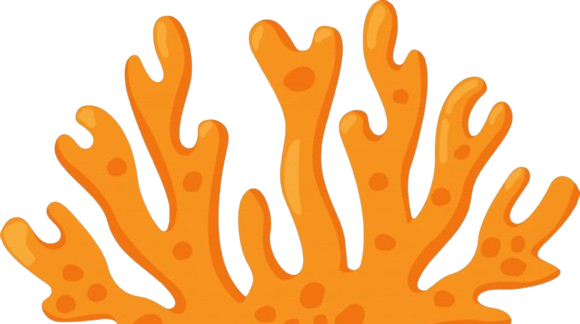
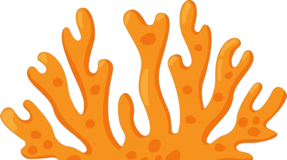

O momento que a praia fica mais poluida é após datas comemorativas, segundo Trashin (2023), após o Réveillon de 2021 do Rio de Janeiro, a prefeitura de Rio de Janeiro recolheu 320 TONELADAS de lixos deixados na areia.

O lixo que é jogado na praia acaba indo para o mar, então jogue o lixo na lixeira, assim você ajudará as pessoas e a vida marinha!
O plástico é o resíduo que mais polui a praia e o mar, segundo Evanildo da Silveira (23 de janeiro 2018), mais de 95% dos lixos encontradas na praia são compostos por plástico!